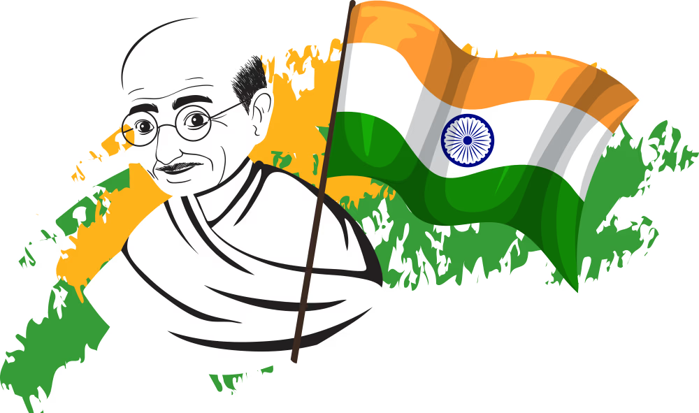
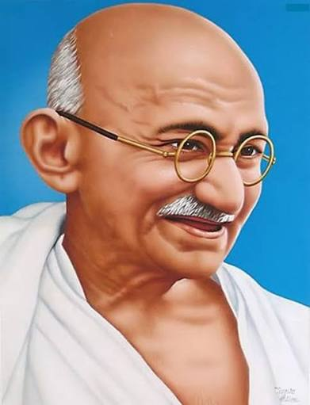
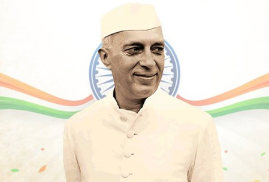
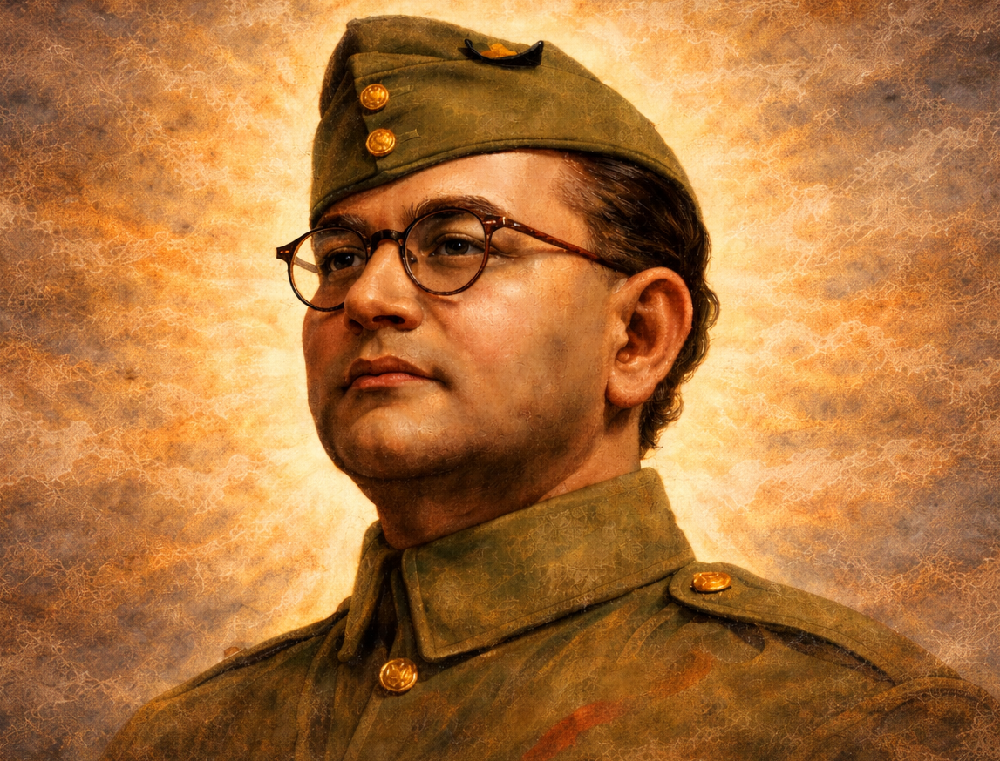
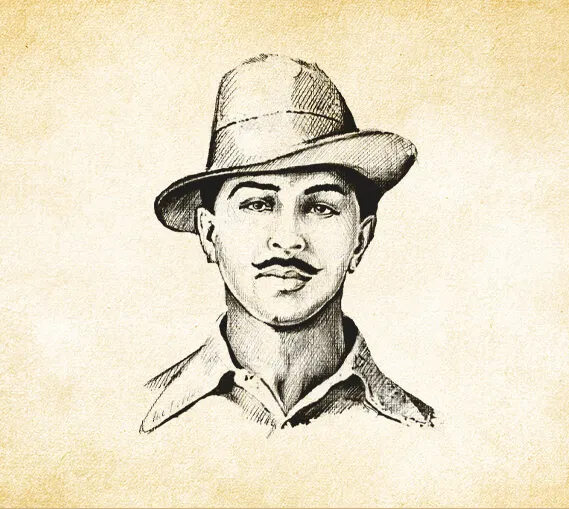
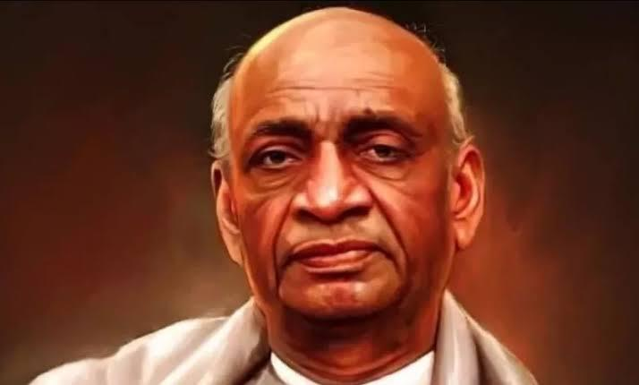

🎉 78th Independence Day
जय हिंद! 🇮🇳
Celebrating the spirit of freedom, unity, and progress. August 15, 1947 - A day that changed history forever.
Explore Our Heroes
Celebrating the spirit of freedom, unity, and progress. August 15, 1947 - A day that changed history forever.
Explore Our Heroes

The tricolor flag represents courage and sacrifice (saffron), peace and truth (white), and faith and chivalry (green). The Ashoka Chakra symbolizes the eternal wheel of law and progress.
Courage, sacrifice, and strength.
Peace, truth, and harmony.
Prosperity, growth, and faith.
Honoring the brave souls who fought for India's independence

Led India's independence movement through non-violent civil disobedience. His philosophy inspired millions worldwide.

The first Prime Minister of independent India, architect of modern India, and a key leader in the freedom struggle.

Founder of Indian National Army, his slogan "Give me blood, and I shall give you freedom" ignited the nation.

A prominent leader in Punjab, played a crucial role in the freedom movement and inspired many revolutionaries.

A revolutionary socialist who became a symbol of youth resistance against British rule at a young age.

The first Deputy Prime Minister, instrumental in integrating princely states into united India.
Moments of pride and celebration
The great revolt that marked the beginning of the freedom struggle
Foundation of the political movement for independence
Gandhi's first major nationwide peaceful protest
The final push for British to leave India
India gains freedom on August 15, 1947